Verifying Hardware with Verb
Verb is a simulation-based functional verification framework for digital hardware designs.
Verb leverages file I/O and software programming languages to simulate hardware designs in their native hardware description language.
Verifying hardware with Verb is separated into 3 steps:
-
Model the hardware design in software to generate input vectors and expected output vectors
-
Simulate the hardware design by sending input vectors to the design under test, receiving output vectors from the design under test, and logging comparisons between simulated output vectors and expected output vectors
-
Analyze the logged comparisons for any errors
Sections
The following documentation will be mainly divided into 4 sections:
- Tutorials - Step-by-step lessons using Verb
- User Guide - General procedures for "how-to" solve common problems
- Topic Guide - Explanations that clarify and provide more detail to particular topics
- Reference - Technical information
About the Project
The project is open-source under the MIT license and is available on GitHub.
About the Documentation
Documentation system and methodology is inspired by Divio.
Getting Started
Motivation
Hardware is hard. Verifying hardware, forget about it. Unfortunately, you can't just forget about it.
Introduction
Verification is an important process in the hardware development cycle that ensures a design functions as intended and is free of bugs. As a design increases in complexity, the number of coding errors also increases. Therefore, one approach to verifying a logic design conforms to specification is functional verification, where tests are performed to check if the design does what is intended under a set of conditions. However, designs typically have an insurmountable amount of test cases that make it impractical to create and perform each one. Therefore, producing test cases and determining when enough test cases is "enough" requires a well-designed and efficient approach.
The problem
Hardware designs are typically described in hardware description languages (HDLs). These are like the software programming languages of the digital hardware space. To test something in HDLs, one may be inclined to continue to use their HDL to write a model (separate from the design itself) and use that to compare how the design functions during a simulation. However, HDLs are not as nice to write software in because, well, they are focused on describing hardware.
Since digital hardware is at least necessary to write software (think about how your computer is built), digital hardware design can be translated behaviorally up the layers of abstraction to software. Therefore, a more natural option to verifying hardware may be to use software programming languages to write the model, and then test it under a simulation enviornment. Writing the model in software is typically easier with nicer language constructs and an abundance of existing libraries readily available. Writing the model in software also provides an extra layer of cross-checking to ensure the hardware design matches the specification. But, how does one integrate any software programming language with any hardware description language to verify a design's behavior?
The solution
Enter Verb- a functional verification framework for digital hardware designs.
Verb defines a collection of low-level functions, also known as drivers, that allow a user to communicate between software models and hardware designs for verification. The main form of communication Verb uses to pass data between hardware and software is file I/O. This method was chosen due to its simplicity and wide support in existing HDLs. Drivers are implemented in both the software programming languages and the HDLs to faciliate the interaction between the design and the model.
By using the drivers available through Verb, for every new hardware design users must only focus on writing the model, not configuring the whole testbench.
This framework attempts to decouple the functional and timing aspects of a hardware simulation. The functional model is written in software, while the exact timing of how to monitor and check the design under test is kept in HDL. This separation of layers allows each language to focus in how they are naturally used.
Project Goals
The following objectives drive the design choices behind building this framework:
-
ease of use: Verifying the next design should be intuitive and easy to set up
-
general-purpose: Be generic and allow the user enough control to support a wide range of designs, from purely combinational logic to control-flow architectures
-
increased productivity: Using the framework should result in shorter times spent in the verification phase due to reusing highly modular components with insightful results
Related Works
- cocotb: coroutine based cosimulation testbench environment for verifying VHDL and SystemVerilog RTL using Python
References
- https://en.wikipedia.org/wiki/Functional_verification
Installing
Verb comes in three separate components: a library for software drivers, a library for hardware drivers, and a command-line application for development as well as running pre-simulation and post-simulation processes.
Any of the components may have one or more implementations; install the component in the programming language or HDL you prefer.
Software library
The software library provides the driver-level code for writing models.
Python
Using Pip, run the following command:
pip install git+"https://github.com/chaseruskin/verb.git@trunk#egg=verb"
To check if it is properly installed, run:
echo "import verb\nprint(verb.__version__)" | python
The version you installed should print to the console.
Hardware library
The hardware library provides the driver-level code for creating testbenches.
VHDL, SystemVerilog
Using Orbit, run the following command:
orbit install verb --url "https://github.com/chaseruskin/verb/archive/refs/heads/trunk.zip"
To check if it is properly installed, run:
orbit view verb --versions
The version you installed should print to the console.
Command-line application
The command-line application provides commands for faster development and running pre-simulation and post-simulation processes.
Using Cargo, run the following command:
cargo install --git https://github.com/chaseruskin/verb.git
To check if it is properly installed, run:
verb --version
The version you installed should print to the console.
Tutorials
User Guide
Topic Guide
Overview
The Verb framework is divided into three main layers.
- Software Layer: low-level functions to generate inputs and outputs and analyze recorded data
- Data Layer: persistent storage of data to be shared between hardware and software layers
- Hardware Layer: low-level functions to load inputs and outputs, drive inputs, check outputs, and log events
This separation of functionality is important for modularity. If a model needs to be written in a different language (Python/C++/Rust), then only the software layer requires changes; the data layer and hardware layer are left unmodified. Having well-defined interfaces between these layers allows for the framework to easily expand to new software languages and HDLs.

Software Layer
The software layer implements the low-level functions required to run any form of test. It translates your test cases into the data layer represented by a specific file format.
The software layer is responsible for generating test inputs, tracking coverage, and generating test outputs. When defining signals in your software model, you can also specify their probability distribution to randomly sample based on distributions. If not specified, the default is uniform distribution.
The software layer can also generate HDL code, which can be directly copied into the testbench for establishing connections between the hardware design and the data layer.
The software layer is available as a library and as a stand-alone program.
Data Layer
The data layer stores the tests to run during simulation and the expected outputs. This information is typically stored in a specific file format already handled by Verb.
Each line in a data file is a transaction. A transaction in this sense is the combination of complete set of inputs or outputs. For data stored in an input file, each transaction is to be the input into the design-under-test on a single clock cycle. For data stored in an output file, each transaction is the outputs to be checked against the design-under-test's outputs in the scoreboard. The output transactions do not have to be checked every clock cycle, and may only be cared when a certain condition occurs (such as a valid signal being asserted).
The number of transactions stored as inputs and outputs does not have to be 1-to-1. There may be more input transactions (fed every clock cycle) than output transactions (only checked when valid).
Hardware Layer
The hardware drivers implement the low-level functions required to receive data from the data layer. This data is read during simulation to run test cases and automatically assert outputs.
The hardware layer is responsible for the timing of the simulation: specifically determining when to drive inputs and monitoring when to check outputs.
Test Vectors
One of the key concepts in the Verb framework is using file I/O to communicate data between the software model and the hardware design throughout the verification process. When running the hardware simulation, the testbench receives the information about the inputs and expected outputs by reading files called vectors.
Vectors store the test vectors for the hardware design to use- that is, they contain the actual data to either drive as inputs or compare with their outputs.
Typically, the set of input test vectors are written to a file called "inputs.txt", and the set of expected output test vectors are written to a file called "outputs.txt".
Vectors file format
Each vector is entered on a new line in a vectors file.
A vector uses the following pattern:
<port 1 value> <port 2 value> ...
Each port value contains a string of 1's and 0's and each port is separated by a single space character. An additional space character follows the final port value.
Example: "inputs.txt"
1 0111 0100
0 1010 1111
1 1011 1100
0 0000 1001
In this example, we are testing a hardware design that has 3 ports to be driven by the vector file (one port of 1-bit width and two ports of 4-bit width). For this simulation, there are 4 test vectors that will be sent as input to the design over the duration of the simulation.
An empty newline character does not exist at the end of the file. The last line of the file contains the final test vector.
Details
It is the testbench's responsibility to determine when to actually supply each vector to the hardware design. This approach is taken to provide users with fine-grain control over the timing of the data-flow within the simulation environment.
One of the consequences of having the vectors files have a very simple format allows for easier parsing in the hardware languages. It also means not a lot of additional information is known, such as what order the ports are arranged in each vector.
To check the order of ports that Verb writes to vectors, see the verb link command. An option is available to print the list of ports in their vector order for inputs and outputs.
A user can also find the port order by identifying the order in which the ports appear in the source code for the hardware design's port interface declarations.
Coverage
When verifying hardware, not only is checking what the design generated as outputs important, but also checking how the design generated those outputs is just as important. This tracking of knowledge in how the design reached a set of outputs is known as coverage.
The importance of coverage
For example, consider we are testing a hardware addition unit. If we run 1,000 test cases and they are all correct, we may be led to believe our design is working perfectly! However, if we discover 500 of these test cases are testing 0+0 = 0 and the remaining 500 test cases are testing 0+1 = 1, that may be a different story. For a 1-bit adder, this might be okay (we covered 2/4 possible input combinations), but if this was a 32-bit adder, we may need to run a lot more tests (there are ${2^{32} * 2^{32} = 2^{64}}$ possible input combinations!). This simple example shows the importance of not just making sure what the design outputs is correct, but also making sure how the test cases sufficiently cover the design's input/state space.
Types of coverage
There are various forms of coverage. One form of coverage is code coverage, which involves tracking the actual lines of code that have been executed during testing. Another form of coverage is functional coverage, which involves tracking a set of scenarios that have occurred during testing. We define a scenario as a sequence of events that are of interest that set the design into a particular state.
Currently, Verb only supports functional coverage. Users define coverage goals according to a design's coverage specification through coverage nets.
Coverage Nets
Coverage nets allow the user to specify the coverage scenarios in software by determining how the design can reach a particular scenario and what the design's state should be when that scenario occurs.
The following coverage nets are available in Verb:
CoverPoint: Scenarios involving a single state
Example scenario: Overflow bit being asserted.
CoverRange: Scenarios involving an interval of continuous states
Example scenario: All the possible values for a 8-bit input (0-255).
CoverGroup: Scenarios involving multiple states
Example scenario: The minimum and maximum possible values for a 4-bit input (0 and 15).
CoverCross: Scenarios involving the cross product between two or more coverage nets
Example scenario: All possible combinations of values for two 8-bit inputs (0-255 x 0-255).
Coverage-driven test generation (CDTG)
Randomness is good for verification- it increases the confidence in your design that it is robust against all kinds of inputs. However, randomness without constraints may make it difficult for complex designs to enter coverage scenarios in order to meet coverage in as reasonable number of test vectors. Therefore, a form of constrained randomness is ideal for balancing the robustness factor of a design as well as meeting all coverage goals.
Coverage-driven test generation (CDTG) is a form of constrained randomness that uses the knowledge of the existing coverage nets to generate the next random test vector within the constraints of advancing toward a currently unmet coverage goal.
Verb supports this form of constrained random test generation by maintaining a list of all the known coverage nets during modeling and assigning the inputs of the model instance with random values that would advance a currently unmet coverage goal.
Relating fishing to coverage - an analogy
You can think of functional coverage as fishing in a large open sea. We will first tell the story, and then relate it back to functional coverage.
Fishing
Imagine you are the fisherman for your town. Recently you found an old map of an unexplored sea detailiing the locations in the sea of where to find fish, the types of fish, and quantities of fish. This map will be very valuable to your town if you are able to prove that its information is indeed accurate. With the old map as your guide, you embark on your quest.
First, you craft specially designed nets for each location marked on the map to ensure you catch the right types of fish and their corresponding amounts.
Second, you climb aboard your boat and carefully steer it in the right directions to reach the marked locations on the map.
Upon reaching a marked location, you cast that location's specially crafted net. You hope to reach your goal at each marked location by catching the correct amounts and correct types of fish.
After achieving the goals at each marked location in the sea, you return home to tell your town about the successful quest and that the old map is true!
Coverage
There are many parallels between our fishing story and the verification process using functional coverage.
The entire state space of the design can be considered the large unexplored sea. It can be very daunting to try to characterize the entire sea without any form of guidance.
Your main source of guidance during the fishing expedition was the old map, which can be considered the coverage specification in the verification process. The coverage specification details the desired scenarios and how many times they should occur without failure during testing. Specifying what you would like to cover is typically good practice before trying to cover everything, which at many times is impractical for complex designs.
With the knowledge of what locations in the sea are important, you then create your nets for each location. This is the same as using the knowledge of which coverage scenarios are important to then create coverage nets, which formalize the particular scenario in software, how to reach that scenario, and what the design's state should look like during the scenario.
The remaining steps, reaching a marked location and casting the net, may be hard to translate to software. That's where Verb and coverage-driven test generation shines. CDTG essentially steers your boat automatically (with some degree of randomness) and then casts the correct the net once it arrives at the given scenario. Using CTDG can automate the task of arriving at coverage scenarios for currently unmet coverage goals.
Once all coverage goals are met, it is sufficient to say there are no more inputs required to be tested and testing can conclude. At this point, if all tests generated their correct expected values, then the design is successfully verified. Woo-hoo! Time to return home and tell everyone in your town about functional coverage.
Events
An event is a thing of importance that takes place during hardware simulation. Events are captured during hardware simulation by being written to a log file, typically called "events.log".
There are functions available in the HW libraries for event logging; see the events package for event logging functions such as capture(...), assert_eq(...), monitor(...), and stabilize(...).
Event log file format
Each event captured during simulation is placed on a new line in the log file.
Each captured event uses the following pattern:
<timestamp> <severity> <topic> <comment>
Example:
180000000fs INFO ASSERT_EQ sum receives 0110 and expects 0110
Timestamp
The timestamp is the time at which the particular event was captured. The value will not include any spaces and may include the time units as a suffix.
Example:
180000000fs
Severity
The severity is the importance of the captured event. It can only be one of the following values: TRACE, DEBUG, INFO, WARN, ERROR, FATAL.
Example:
INFO
By default, any events that are of TRACE, DEBUG, or INFO importance are considered OKs. Any events that are of WARN, ERROR, or FATAL importance are considered failures.
Topic
The topic is the high-level thing that is happening in the captured event. The value will not include any spaces and is typically the function name that was called to capture the event.
Example:
ASSERT_EQ
Comment
The comment is low-level information that is important to this capture event. It is composed of two values: a subject and a predicate.
<subject> <predicate>
The comment is typically discarded during analysis by Verb and is mainly for the benefit of the user.
Example:
sum receives 0110 and expects 0110
Writing custom events
You can easily write custom events by calling the capture(...) function or by wrapping capture(...) in another function. It is recommended to write in the present tense when providing values for comments.
Reference
Python API
The (hopefully complete) list of available functions for the Python programming language. These functions are thought of as the Verb drivers in the framework's software layer.
SystemVerilog API
Reference documentation for the Verb conjugations in SystemVerilog.
Package verb
Typedefs
typedef enum {TRACE, DEBUG, INFO, WARN, ERROR, FATAL} tone
The log level type.
Functions
function automatic int start(input string name)
Creates the file with the given name to prepare for simulation logging.
function string parse(inout string row)
Return a string in binary format by reading a logic value from the line row.
Tasks
task finish(int n=0)
Closes the event log file and ends the simulation completely.
task automatic async_on_sync_off(ref logic clk, ref logic pin, input logic active, input int cycles)
Asynchronous asserts pin and synchronously de-asserts pin on the
cycles'th clock edge.
task automatic sync_on_async_off(ref logic clk, ref logic pin, input logic active, input int cycles)
Synchronously triggers the logic bit pin to its state active and then
asynchronously deactivates the bit to its initial value after cycles
clock cycles elapse.
The trigger will not be applied if cycles is set to 0. The signal will
deactivate on the falling edge of the cycles count clock cycle.
task automatic sync_hi_async_lo(ref logic clk, ref logic pin, input int cycles)
Synchronously set pin high, then asynchronously set pin low.
task automatic sync_lo_async_hi(ref logic clk, ref logic pin, input int cycles)
Synchronously set pin low, then asynchronously set pin high.
task automatic async_hi_sync_lo(ref logic clk, ref logic pin, input int cycles)
Asynchronously set pin high, then synchronously set pin low.
task automatic async_lo_sync_hi(ref logic clk, ref logic pin, input int cycles)
Asynchronously set pin low, then synchronously set pin high.
task automatic capture(inout int fd, input tone level, input string topic, input string subject, input string predicate = "")
Captures an event during simulation and writes the outcome to the file fd.
The time when the task is called is recorded in the timestamp.
task assert_eq(input logic[4095:0] received, input logic[4095:0] expected, input string subject)
Assertion that checks if two logic words received and expected are equal to each other.
Note: https://stackoverflow.com/questions/67714329/systemverilog-string-variable-as-format-specifier-for-display-write
task assert_ne(input logic[4095:0] received, input logic[4095:0] expected, input string subject)
Assertion that checks if two logic words received and expected are not equal to each other.
task automatic assert_stbl(input bit flag, input logic[4095:0] data, input string subject)
Assertion that checks that the behavior of data is stable while the condition flag is true (1'b1).
task automatic observe(ref logic clk, ref logic flag, input logic active, input int cycles, input string subject)
Checks the logic flag is true (1'b1) on the rising edge of clk before cycles clock cycles elapse.
VHDL API
The (hopefully complete) list of available functions for the VHDL hardware description language. These functions are thought of as the Verb drivers in the framework's hardware layer.
Environment Variables
A design model written in software may require data from external sources, such as the testbench's interface or the randomness seed. To communicate these values to any design model in any programming language, Verb uses environment variables.
The following environment variables are supported:
VERB_TB_JSON— The targeted testbench's interface in JSON.VERB_DUT_JSON- The targeted device-under-test's interface in JSON.VERB_RAND_SEED- The random seed value.VERB_EVENTS_FILE- Path to expect the events log.VERB_COVERAGE_FILE- Path to expect the coverage report.VERB_LOOP_LIMIT- Maximum number of main loop iterations to perform before forcing a break.